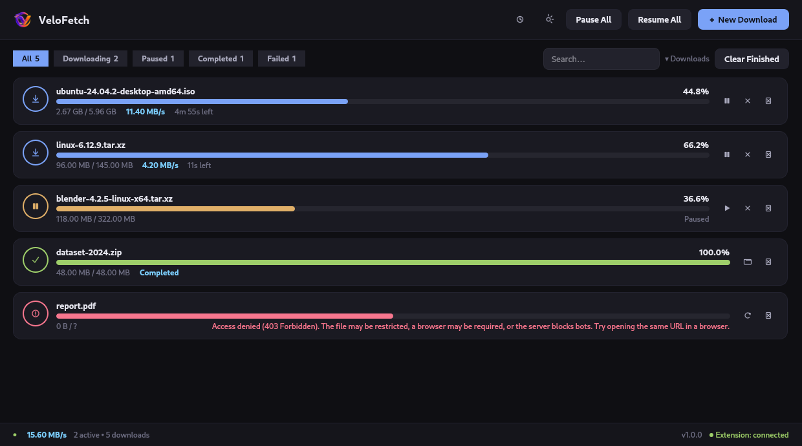
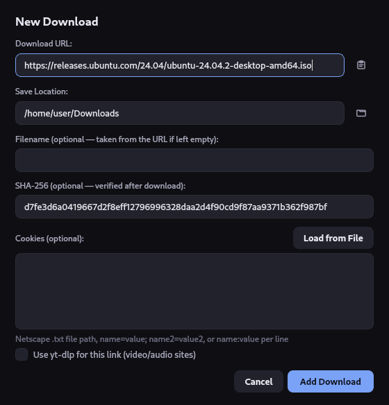
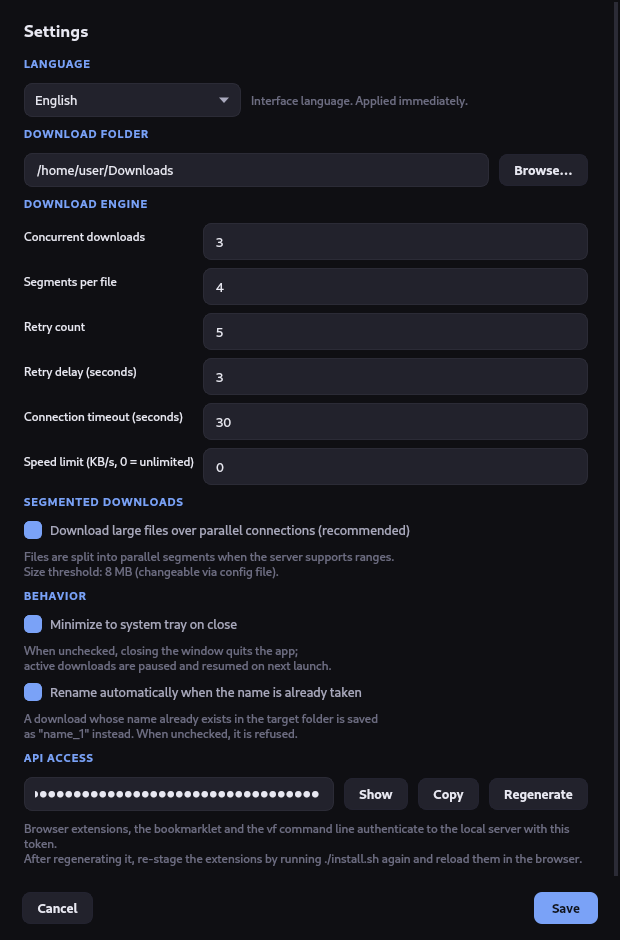
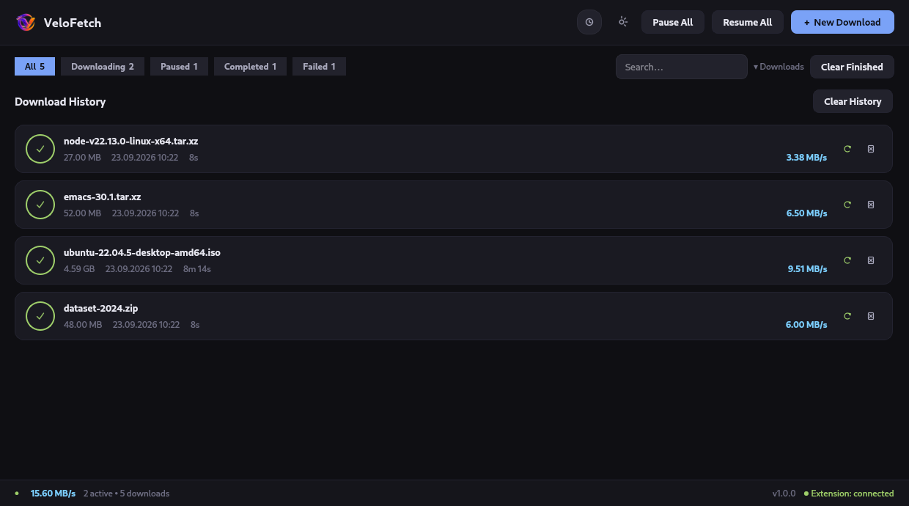

Downloads that finish.
A fast, lightweight download manager for Linux — parallel segmented downloads, resume that survives a restart, and downloads handed straight over from your browser.
git clone https://github.com/tkinali/VeloFetch.git && cd VeloFetch && ./install.sh

What it does
A desktop app, not a daemon with a web panel: a Qt 6 window, a tray icon, and a CLI that talks to the running instance. No Electron, no background service, nothing phoning home.
Segmented downloads
Files over 8 MB are pulled over parallel byte-range connections — four by default — on
servers that support HTTP Range. VeloFetch sends a real 206 probe first and falls back to a
single stream when the server does not honour it.
Resume, not restart
Pausing uses HTTP Range, so continuing picks up where it stopped. Progress is checkpointed to SQLite and segment offsets to a sidecar file, so closing the app — or a reboot — is not a lost download.
Retries that make sense
Connection errors back off exponentially. Permanent failures — 401,
403, 410 — are reported instead of being retried pointlessly.
Browser integration
Right-click → Download with VeloFetch in Chrome, Chromium, Brave, Vivaldi and Firefox, with the page's cookies forwarded so login-protected files work. A bookmarklet covers every other browser with nothing to install.
Verification & limits
Paste an expected SHA-256 when adding a download and the verdict lands on the card. Cap a download in KB/s when you need the bandwidth elsewhere — the cap applies per download.
Built for the desktop
Dark Qt 6 interface with filter chips, search and per-card context menus. System tray keeps downloads running when you close the window, and a desktop notification tells you when one is done. English and Turkish, following your system locale.
A look around
Every screenshot is from a real session on the current build.



Install
Python 3.10 or newer on any Linux distribution. Qt arrives as a pip dependency, so no system Qt packages are needed.
Automatic
Creates a virtualenv, installs the app, adds a vf launcher and an application-menu entry, generates your API token and stages the browser extensions.
git clone https://github.com/tkinali/VeloFetch.git
cd VeloFetch
./install.shWith pip
Puts vf and velofetch on your PATH. Add the media extra for video sites.
pip install .
# with yt-dlp:
pip install ".[media]"From source
No installation at all — run it straight out of the checkout.
pip install -r requirements.txt
python -m vfFrom the terminal
The CLI talks to the running app over the local API.
| Command | What it does |
|---|---|
vf | Launch the app, or focus the window that is already open |
vf add <url> | Queue a download — -f filename, -c cookies |
vf list | Show every download with its status and progress |
vf ping | Check whether the app is running |
vf integration | Print the browser-integration URL, token included |
Browser integration
VeloFetch listens on 127.0.0.1:9876. Every request has to carry your API token, so
a random web page cannot queue downloads behind your back.
Bookmarklet — nothing to install
Run vf integration, open the URL it prints, and drag the button onto your
bookmarks bar. Clicking it on any page sends that page's URL and cookies over. Works in
every browser.
A bookmarklet only sees document.cookie, so HttpOnly session
cookies are not included — use the extension or a cookies.txt for those.
Extension — right-click menu
./install.sh stages ready-to-load copies with your token already written in.
Load them from ~/.local/share/velofetch/browser/, not from the repository —
the copy in the repo deliberately carries no token.
Chromium: chrome://extensions → Developer mode → Load unpacked.
Firefox: about:debugging → Load Temporary Add-on.
/ping and the CORS
preflight are the two deliberate exceptions), non-loopback Host headers are rejected
to block DNS rebinding, and Access-Control-Allow-Origin is never *. The
token is generated on first run and stored mode 0600.